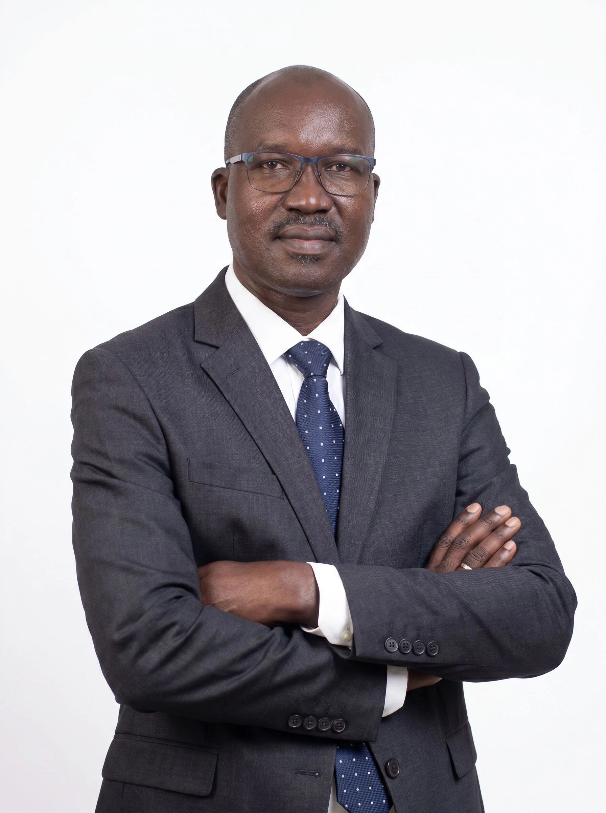

Bienvenue sur le site de CCAK Assurances.
Le secteur des assurances joue un rôle essentiel dans la protection des personnes, des entreprises et des institutions. Pourtant, de nombreux assurés restent confrontés à des difficultés liées au choix des garanties, à la compréhension des contrats ou encore à la gestion des sinistres.
C'est pour répondre à ces défis que nous avons créé CCAK Assurances. Notre ambition est de mettre notre expérience et notre expertise au service de nos clients afin de leur apporter des solutions adaptées, des conseils objectifs et un accompagnement permanent.
Après plus de deux décennies d'expérience acquises au sein de sociétés d'assurances de premier plan telles que STAR Nationale, STAR Vie et SUNU Assurances, nous avons souhaité créer un cabinet capable de défendre les intérêts des assurés et de leur offrir un service personnalisé.
Titulaire de Diplôme d'Etudes Supérieures Spécialisées en Assurances(DESS-A) obtenus à l'Institut International des Assurances de Yaoundé, M. Mathias NADJIADOUM KOULENGAR possède une expérience solide couvrant :